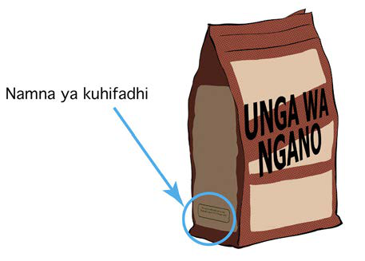

madhara yanayoweza kujitokeza. Taarifa za utunzaji wa vitu huwekwa kwa namna mbalimbali mfano katika vifungashio. Kielelezo namba 20 kinaonesha maelezo ya namna ya kuhifadhi unga.

Picha A, Muda wa matumizi;. Kifuko cha unga wa ngano chenye mshale unaoonyesha sehemu ya lebo ya namna ya kuhifadhi.Kielelezo namba 20: namna ya kuhifadhi unga.
Kazi ya kufanya namba 13
Chunguza taarifa muhimu zilizopo katika bidhaa mbalimbali zinazopatikana nyumbani au shuleni na bainisha mambo yafuatayo:
(a) Muda wa matumizi;
(b) Viambata vilivyomo katika bidhaa hizo;
(c) Namna ya matumizi; na
(d) Namna ya kuhifadhi.
Zoezi la marudio
Sehemu A: Chagua jibu lililo sahihi
1.
Kuna faida gani ya kuchunguza taarifa kwenye bidhaa za chakula?